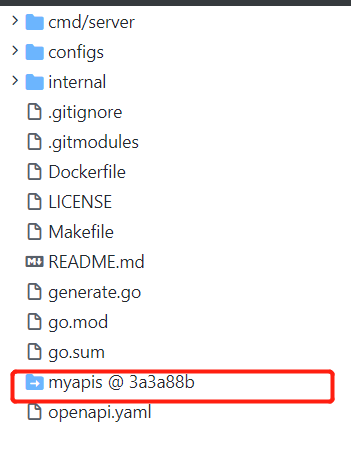
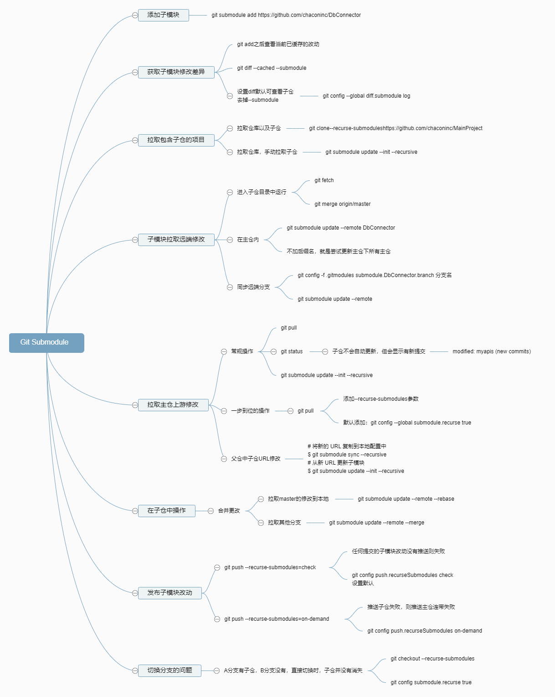

proto管理之submodule
使用Git Submodule方式管理proto文件，各项目直接依赖IDL文件本身，依赖源头均来自git子仓，保证依赖源的唯一性。对齐各服务间的proto文件版本。
依赖问题引发的问题是很多的，对于依赖的管理也会出现很多，例如：
https://en.wikipedia.org/wiki/Dependency_hell
https://zh.m.wikipedia.org/zh-hans/%E7%9B%B8%E4%BE%9D%E6%80%A7%E5%9C%B0%E7%8B%B1
子仓目录
参考Google家的库googleapis：
| 目录 | 举栗 |
|---|---|
| 总目录（子仓） | xxxxxapis |
| 项目名 | cloud / ads / monitor |
| 模块名 | device / datacatalog / user |
| 版本 | v1 / v2 / v3 |
| 文件 | service.proto、error.proto |
子仓不保存IDL文件生成的中间文件，只保存原始文件。
项目引入
- 引入子仓
1 | git submodule add https://xxxx.com/xxxx/myapis |
子仓在引入后，不去更新，子仓会呈现固定的版本。
更新子仓，合并上游版本变化
1 | // 进入子仓内，运行命令 |
更多关于子仓的操作命令，参考：Git-工具-子模块，也可参考下图。
脑图分享链接：https://naotu.baidu.com/file/df1c4f51d9617121e17b31ba6e577d3a?token=280c1c34c3b920e4
proto文件
proto文件中，package、option go_package，这两个参数是我们需要注意的：
package：即别的proto文件在引用该文件后，其使用的索引前缀。
option go_package： protoc 编译时，生成的路径地址，可以用go_out设置生成的路径，使用source_relative让文件生成在相对路径中。
proto文件语法以及版本追踪工具：
编译
由于依赖原始文件，在拉取到子仓后，或是更新到最新子仓后，proto文件都应是再次编译，故在Makefile中，build命令中，需要加入重新编译proto文件的操作，让proto文件每次都保持最新状态，防止中间版本的出现。
也可以使用例如BAZEL编译，声名依赖，指定proto文件。
实践例子
本文标题：proto管理之submodule
文章作者：小师
发布时间：2022-05-09
最后更新：2023-02-25
原始链接：chunlife.top/2022/05/09/proto管理之submodule/
版权声明：本站所有文章均采用知识共享署名4.0国际许可协议进行许可